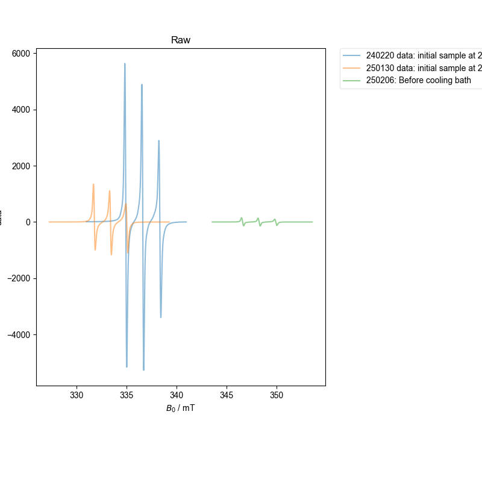
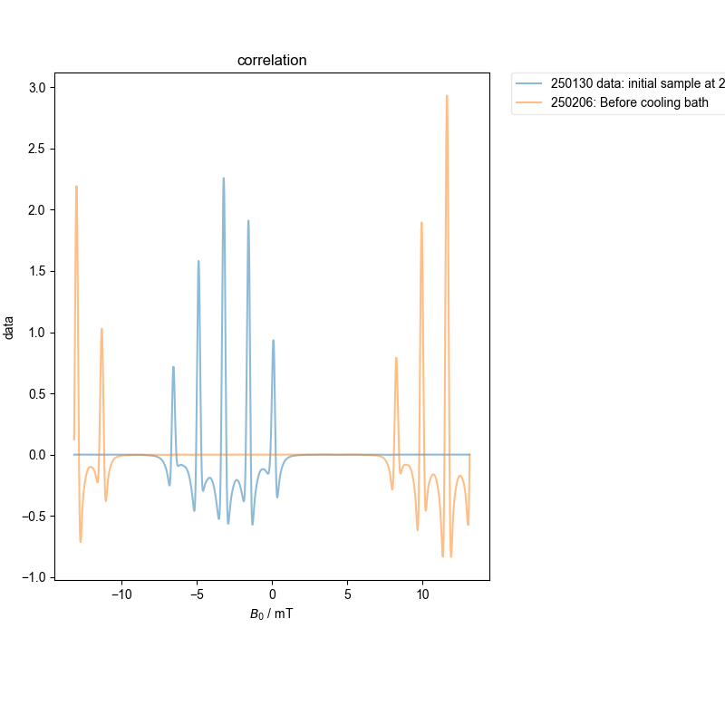
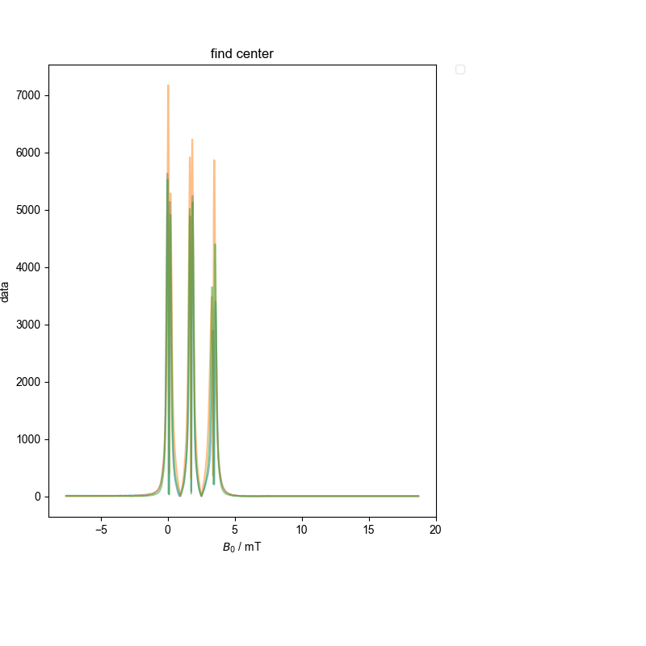
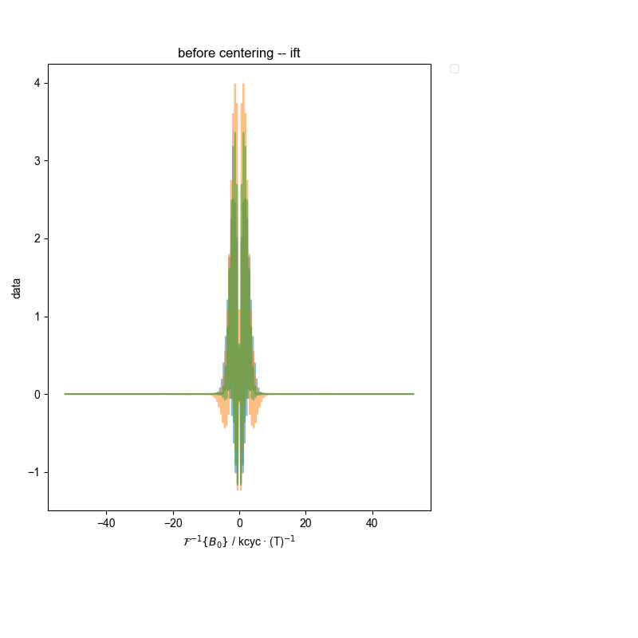
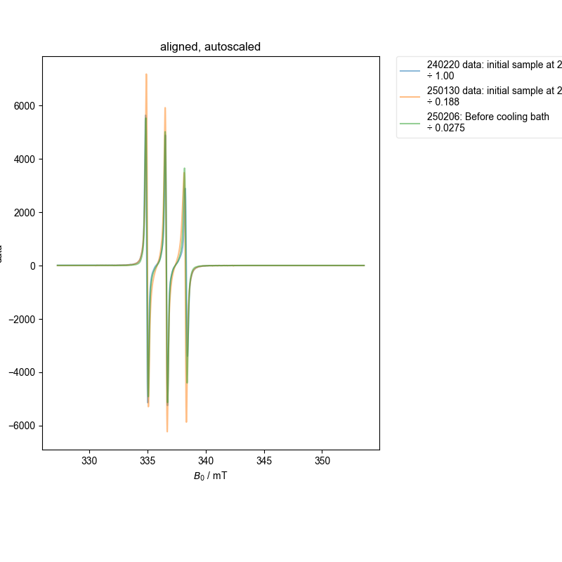
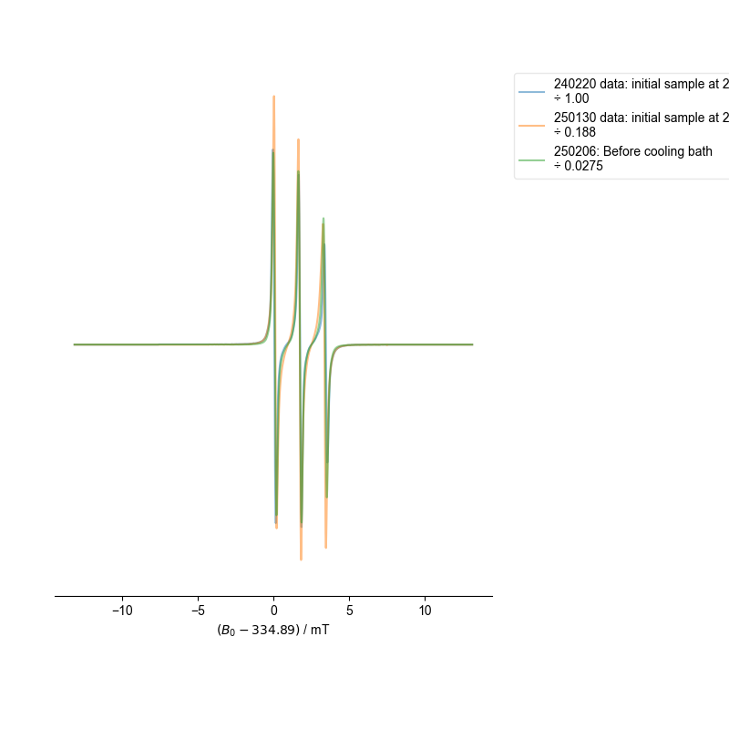
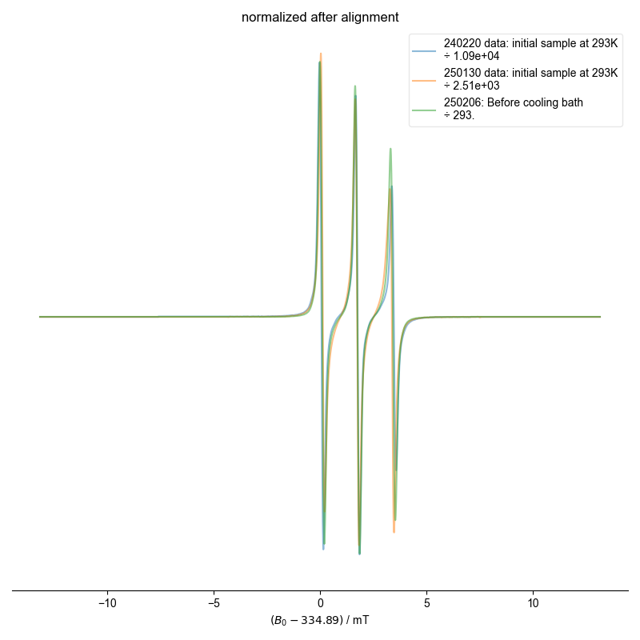

Note
Go to the end to download the full example code
Another EPR Alignment¶
Please do see the other EPR alignment example.
However, this EPR alignment represents a more challenging case b/c:
We are extracting 1D slices from a 2D dataset
The spectra are somewhat more dissimilar, and so require progressive alignment against an average
- 
- 
- 
- 
- 
- 
- 
1: Raw |||mT
2: correlation |||mT
3: find center |||mT
4: before centering -- ift |||kcyc · (T)$^{-1}$
5: after centering -- ift |||kcyc · (T)$^{-1}$
6: aligned, autoscaled |||mT
7: centered spectra
8: normalized after alignment |||mT
/home/jmfranck/git_repos/pyspecdata/pyspecdata/figlist.py:782: UserWarning: This figure includes Axes that are not compatible with tight_layout, so results might be incorrect.
plt.gcf().tight_layout()
from pyspecdata import find_file, figlist_var
from pyspecProcScripts import align_esr
import matplotlib.pyplot as plt
d = {}
d["250130 data: initial sample at 293K"] = find_file(
"250130_20mM_TSO4_W20_Isooct_run1.DSC", exp_type="francklab_esr/romana"
) # cooling
d["240220 data: initial sample at 293K"] = find_file(
"240220_TempoSO4_W20_run1.DSC", exp_type="francklab_esr/romana"
) # cooling
d["250206: Before cooling bath"] = find_file(
"250206_20mM_TSO4_W20_C8.DSC", exp_type="francklab_esr/romana"
) # cooling
for k, v in d.items():
if "250206" in k:
d[k] = v.chunk_auto("harmonic", "harmonic")["harmonic", 0]["phase", 0]
else:
d[k] = v.chunk_auto("harmonic", "harmonic")["harmonic", 0]["phase", 0]
d[k].reorder("Temperature").sort("Temperature")
d[k] = d[k]["Temperature":293]
with figlist_var() as fl:
d = align_esr(d, fl=fl)
fl.next("normalized after alignment")
# If the data very dissimilar, the least-squares scaling doesn't
# work as well. For these, it makes more sense to use a peak
# normalization.
for k, v in d.items():
extra_norm = abs(d[k].data.max() - d[k].data.min())
d[k] /= extra_norm
d[k].set_prop("scaling", d[k].get_prop("scaling") * extra_norm)
fl.plot(
d[k],
alpha=0.5,
label=f"{k}\n÷ {d[k].get_prop('scaling'):#0.3g}",
)
fl.adjust_spines("bottom")
plt.ylabel("")
plt.gca().set_yticks([])
Total running time of the script: (0 minutes 1.817 seconds)